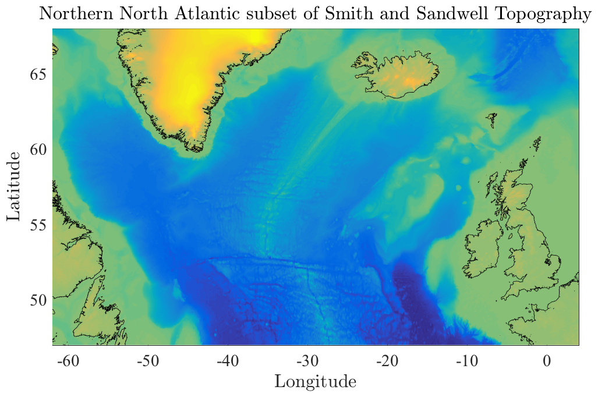

READTOPO Read one-minute topography data from Smith and Sandwell. _______________________________________________________________________  _______________________________________________________________________ [TOPO,LAT,LON]=READTOPO(REGION) extracts regional topography from the the one-minute Smith and Sandwell global database version 19.1. This file is included with JDATA, available from at http://www.jmlilly.net. REGION is an array of the form REGION=[WEST EAST SOUTH NORTH] which indicates the *edges* of the desired domain. Longitudes can be specified either on the interval [0,360] or the interval [-180,180]. The region may overlap the prime meridian or the dateline. Region boundaries are interpreted to exclude the poles. TOPO is a matrix of topography in units of kilometers and is positive for above sea level, and negative for below sea level. LON is a row vector of longitudes and LAT a column vector of latitudes. LAT and LON output by READTOPO are *grid-centered*, that is, they indicate midpoints of the topography cells. LON is uniformly spaced, but LAT is non-uniformly spaced, with bin sizes decreasing poleward. Note that the Smith and Sandwell database is defined only for latitudes between -80.738 and 80.738. [TOPO,LAT,LON]=READTOPO([]), where REGION is an empty array, returns entire (very large) dataset. Topography at higher northern latitudes is found in the IBCAO dataset, see ABOUT_IBCAO. A merged 1/6th degree version of both datasets, called JTOPO, is is distributed with JLAB; see ABOUT_JTOPO for details. __________________________________________________________________ Interpolation [TOPO,LAT,LON]=READTOPO(REGION,DLAT,DLON) optionally linearly interpolates the one-minute (1/60 degree) topographic data to a different resolution, specified by DLAT and DLON, in degrees. [TOPO,LAT,LON]=READTOPO([],DLAT,DLON) interpolates the entire dataset. READTOPO(REGION,DLAT) with DLON omitted sets DLON=DLAT. This is useful for interpolating the high-resolution Smith and Sandwell dataset to a coarser resolution. __________________________________________________________________ Alternate path By default, READTOPO looks for the topography file topo_19.1.img in the JLAB directory. [TOPO,LAT,LON]=READTOPO(DIRNAME,REGION...) alternatively specifies DIRNAME as the path to the parent directory of the file topo_19.1.img. __________________________________________________________________ Data and documentation The original location for the Smith and Sandwell Global Topography Dataset v. 19.1, file 'topo_19.1.img' is http://topex.ucsd.edu/WWW_html/mar_topo.html. The reference for the Smith and Sandwell Database is Smith, W. H. F., and D. T. Sandwell, Global seafloor topography from satellite altimetry and ship TOPO soundings, Science, v. 277, p. 1957-1962, 26 Sept., 1997. __________________________________________________________________ License and Copyright The data file topo_19.1.img is distributed with JDATA for RESEARCH AND NON-PROFIT USE ONLY, in accordance with the copyright statement for the Smith and Sandwell dataset. For details, type 'help topo_copyright'. You are free to use and redistribute READTOPO under the terms in the JLAB license, http://www.jmlilly.net/doc/jlab/jlab_license.html. READTOPO is self-contained, although tests and sample figure require JLAB to run. JLAB is available from http://www.jmlilly.net. Send comments, questions, and bug reports to 'eponym@jmlilly.net'. __________________________________________________________________ See also ABOUT_IBCAO, and JTOPO, REGIONPLOT, and TOPOPLOT in JLAB. 'readtopo --f' generates the sample figure shown above. 'readtopo --t' runs some tests. Usage: [topo,lat,lon]=readtopo([west east south north]); [topo,lat,lon]=readtopo(dirname,[west east south north]); __________________________________________________________________ This is part of JLAB --- type 'help jlab' for more information (C) 2006--2019 J.M. Lilly --- type 'help jlab_license' for details